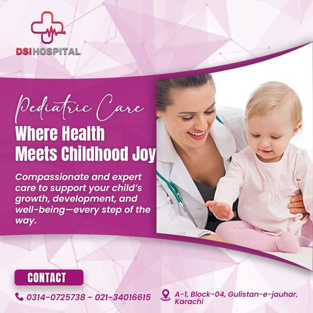
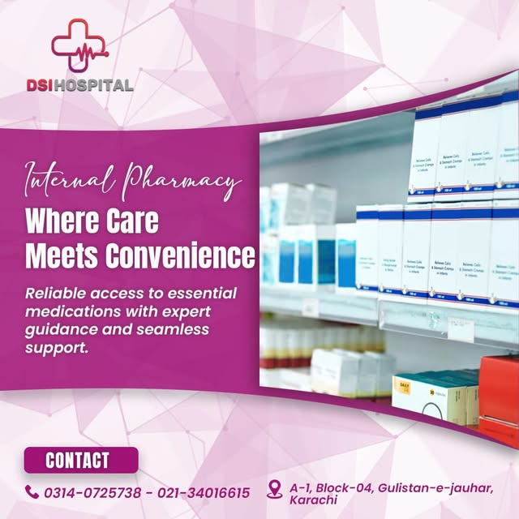
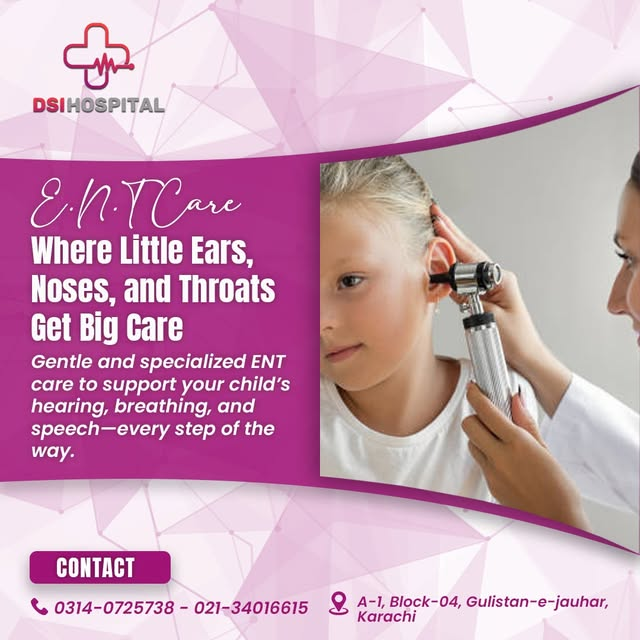
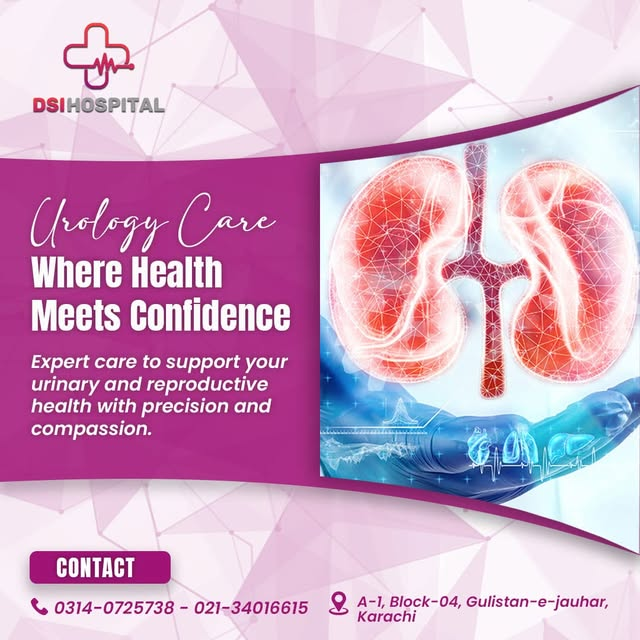
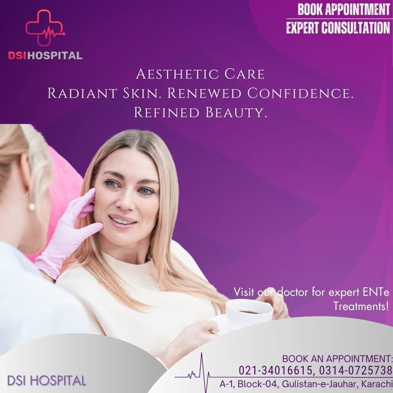
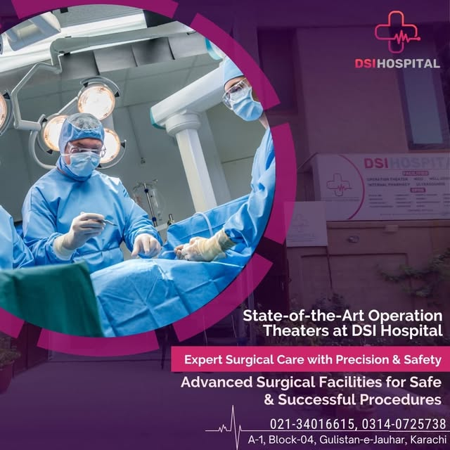

Departments
Essential specialties under one roof, open around the clock for emergencies and every stage of family health.
✚ Emergency — Open 24 Hours
Round-the-clock emergency care with a dedicated 24/7 Gynae & Obs emergency for women. In an emergency, call us or come straight to the hospital.

Gynae & Obstetrics
Compassionate gynecological and maternity care — where every woman's health matters.

IVF & Fertility
Advanced IVF care with heart and hope — personalized fertility solutions for every couple.

NICU
Advanced neonatal care for newborns in need — every beat counts, every baby matters.

Pediatrics
Compassionate care supporting your child's growth, development and well-being.

Cardiology
Precise diagnosis, stronger hearts, healthier lives — cardiac consultation and evaluation.

ENT
Ear, nose and throat care for all ages, including specialized pediatric ENT services.

Urology
Expert urinary and reproductive health care with precision and compassion.

General Medicine & OPD
Internal medicine and general OPD consultations by our RMO team, daily 9:00 AM – 1:00 PM.

Operation Theaters
State-of-the-art operation theaters for safe and successful surgical procedures.

Aesthetic Care
Radiant skin, renewed confidence — aesthetic and dermatology consultations.

Pharmacy & Lab (24/7)
24-hour in-house pharmacy and laboratory with ultrasound and diagnostic services.
Department graphics and photographs are from DSI Hospital's official social media pages. Consultant availability varies — call 0314-0725738 to confirm timings.
Looking for a specific specialist?
Call or WhatsApp 0314-0725738 to confirm consultant availability and OPD timings before your visit.